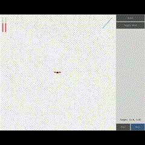
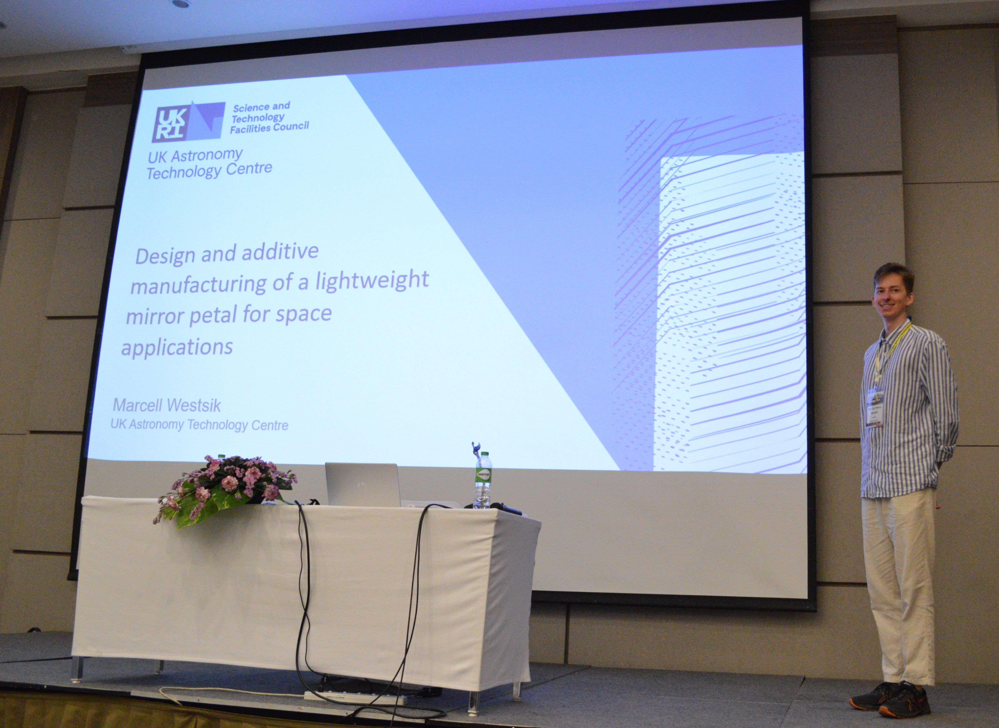
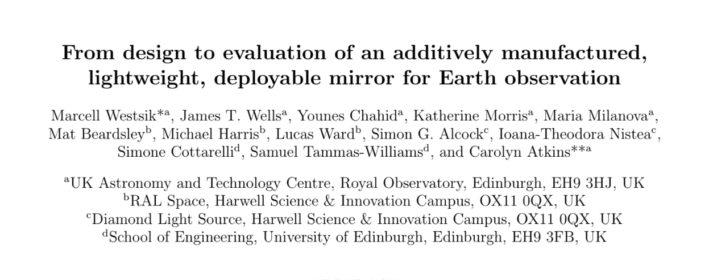

TRIZ Problem Solving
TRIZ provides a thinking framework for problem solving which stops
our cognitive momentum and, thus, helps us come up with innovative, out ideas
and solutions to our problems. Through a 3-day course I received good quality
and thorough learning material, was able to familiarize myself with its toolkits
and practice them on example problems. For more information on TRIZ,
visit the Oxford Creativity website.

Design for Metal Powder Bed Fusion
Participated in a 3-day training at the Manufacturing Technology Centre.
The training covered, among others, workflows, AM process downselection,
generative design, lattices, inspection techniques, design process documentation
and AM standards. More information on the training can be
found here.
Systems Engineering
Learned about the basics of systems engineering from the head of the systems engineering
group at the UK Astronomy Technology Centre through a 3-day training session involving
lectures, individual and team exercises.
CS50 - Introduction to Artificial Intelligence
Got introduced to the basics of Artificial Intelligence using python through online
lectures and completed example exercises.
CAD design and FEA
Through university and work activities I gained experience with multiple CAD software, such as SolidWorks, Fusion360, Autodesk Inventor and nTop (formerly nTopology).
I have also gained experience with FEA software such as Ansys Mechanical and Abaqus.

Coding
I have experience with Python, Matlab, LabView, Arduino, and a litle bit with HTML...
The gif shows the result of a coursework in which I have implemented a Cascade Controller in Python to control a 2D multicopter.

Presentation
I gained presentation experience through High School, University activities and workplace activities.

Report writing
Through my academic, extracurricular and work activities I gained extensive experience with report writing using PowerPoint, Word, and OverLeaf.

3D printing
I have experience with Fused Deposition Modeling (FDM), Stereolithography (SLA) and Powder Bed Fusion (PBF) additive manufacturing methods.

Linux and Windows
I am familiar with both Windows and Linux operating systems.


{kind=link}
{kind=link}
{kind=link}